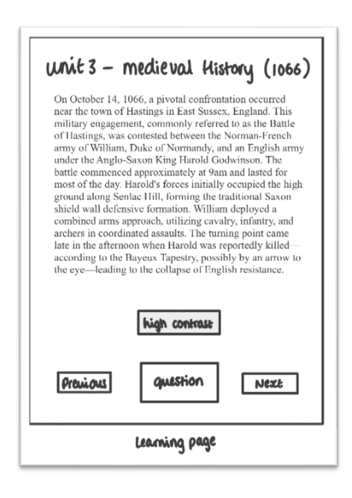
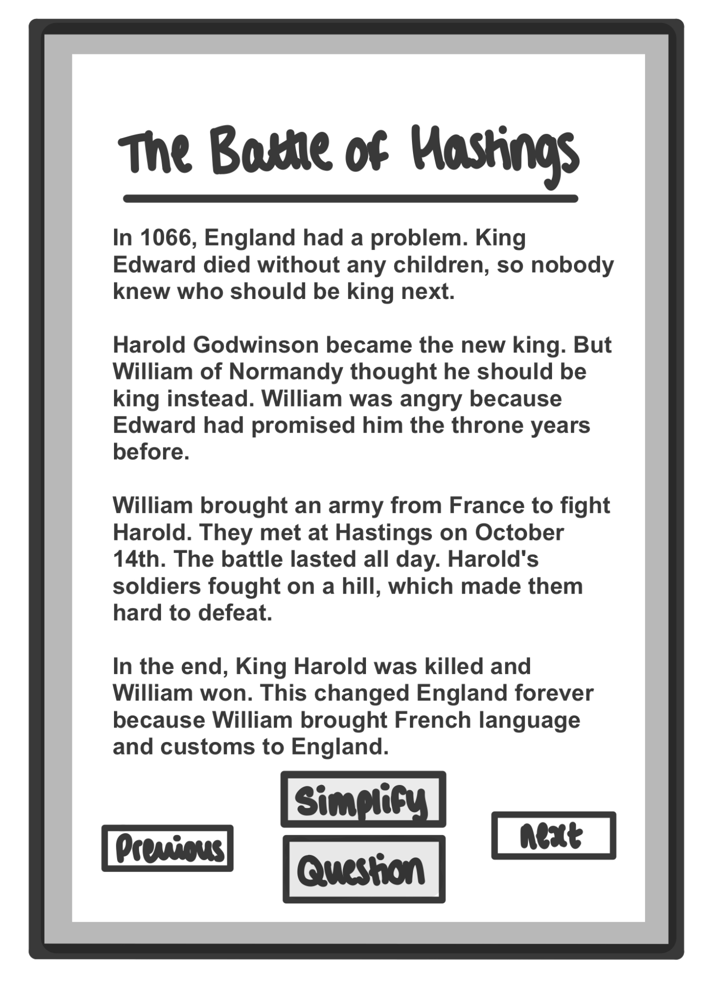
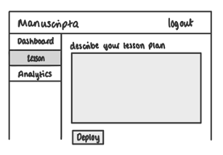
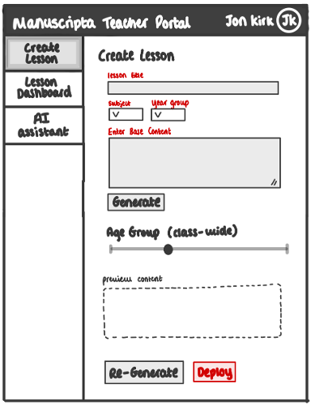
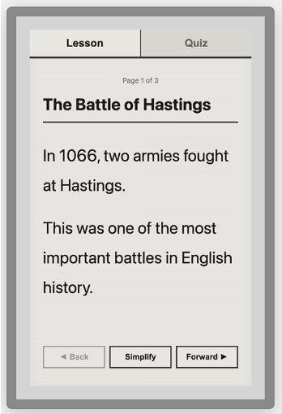
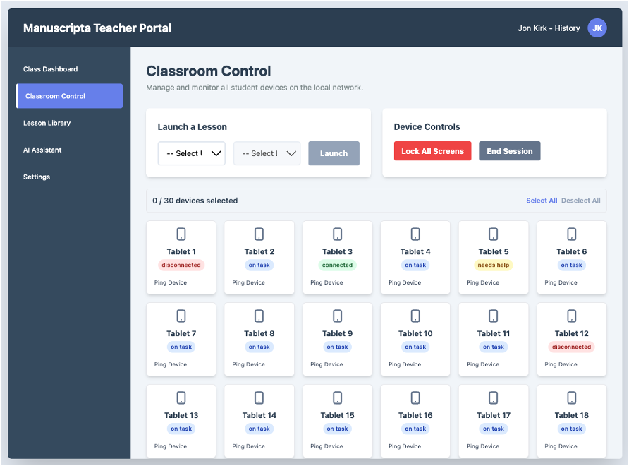

UI Design
User interface design principles and iterative design process for Manuscripta's dual-app platform.
Design Principles
Manuscripta's interface design is informed by Nielsen's usability heuristics, reviewed as part of the HCI component of the module. Given the dual-app nature of the system and the neurodiverse profile of the student user base, the following principles were prioritised throughout the design process.
| Principle | Description |
|---|---|
| Simplicity | Interfaces minimise visual clutter and distractions. The student E-ink display shows only essential elements - content and navigation - with no colour, animation or unnecessary chrome. The teacher interface focuses on three core tasks: content generation, distribution and monitoring. |
| Consistency | Visual elements maintain predictable behaviour across both applications. Consistent typography, button styles and layout patterns reduce the learning curve and prevent confusion, particularly important for neurodiverse users who rely on routine and predictability. |
| Accessibility | High contrast ratios of at least 7:1 for E-ink displays, adjustable text sizes, and optional text-to-speech ensure students with varying sensory and cognitive needs can interact comfortably. Reading level adjustment supports comprehension across ability levels. |
| Feedback | Real-time feedback informs users of system status at every stage. Students receive immediate confirmation when answers are submitted. Teachers receive live progress updates and help request notifications. Loading states and confirmation messages ensure neither user is left uncertain about what the system is doing. |
| Error Tolerance | The system handles mistakes gracefully. Auto-save prevents work loss during network interruptions. Teachers can regenerate content if initial AI output does not meet their needs. Students can request help without penalty or drawing attention to themselves. |
| Privacy by Design | No data leaves the local network at any point. The interface contains no login screens, cloud sync indicators or external service integrations, reinforcing to both teachers and students that the system operates entirely within the school environment. |
Sketches
After consulting Marie-Louise Holmberg (National Autistic Society) and Dan Cooper (SEN specialist) via semi-structured email questionnaires, and conducting further research, we identified the following issues and refined our sketches accordingly.
Student Interface Learning Page - Initial to Improved Sketch
Initial Learning Page

Improved Learning Page

| Issue Uncovered | Changes to Our Sketch | Severity |
|---|---|---|
| "Excessive visuals are overstimulating." 87% of autistic children show signs of over- or self-stimulation when using technology. [5] | The cluttering of on-screen buttons may overwhelm users. The layout was simplified with fewer navigation buttons. | 2 |
| "Many autistic children fall behind in comprehension tasks due to reading deficits." Tailored reading assistance should be provided. [6] | Reading level adjustment features were added for both teacher (class-wide) and student (individual) interfaces, including a Simplify button. | 3 |
Severity ranges from 1 (lowest) to 3 (highest).
What we changed:
Minimal Interface Elements - accessibility controls and reading level adjustments were removed from the student view to reduce clutter. Teachers configure these settings in advance based on individual student needs.
Reading Level Controls - dual-level reading adjustment was added. Teachers set the default class reading level, while students can individually simplify text on their devices.
We began by constructing personas and researching SEN needs, which identified the following accessibility requirements guiding our initial student interface sketch:
| Requirement | Rationale | How We Applied It |
|---|---|---|
| Alternative input methods [1] | Students with motor or physical disabilities may be unable to use a single input method reliably | The student interface supports stylus, touch and typing, with touch targets sized appropriately for users with motor difficulties |
| Adaptable cognitive levels [2] | Mixed-ability classrooms require content pitched at different reading levels simultaneously | Teachers set a class-wide reading level via an age group slider; students can individually simplify or summarise text on their own device |
| High contrast [3][4] | Students with reading difficulties and autism are sensitive to visual stimuli and low contrast | The E-ink display uses a monochromatic theme with a minimum 7:1 contrast ratio, eliminating colour as a source of visual confusion |
| Self-paced progression | Timed or peer-visible progress creates anxiety for neurodiverse learners | The student interface shows only the current task with no visible progress indicators or peer comparison |
Teacher Interface - Initial to Improved Sketch
Initial Sketch

Improved Sketch

| Issue Uncovered | Changes to Our Sketch | Severity |
|---|---|---|
| The layout was easy to understand but lacked clear guidance for new users. | Tabs were renamed more descriptively, with structured onboarding prompts added for first-time users. | 1 |
| The purpose and expected input for the large "lesson plan" text box was not immediately clear. | Lesson input was broken into smaller labelled fields - title, subject, base content and preview - to guide teachers through the creation process. | 3 |
Severity ranges from 1 (lowest) to 3 (highest).
What we changed:
Structured Lesson Input Fields - the ambiguous large text box was replaced with clearly labelled fields guiding teachers step by step through content creation.
Clear Navigation and Onboarding - tabs were renamed descriptively and structured onboarding prompts were added. An AI assistant was also introduced to provide real-time help if needed.
Reading Level Controls - a class-wide age group slider was added to the teacher interface, allowing teachers to set the default reading level for all distributed content.
Initial Prototype
We translated our sketches into a digital interactive prototype using HTML and CSS to simulate both the student and teacher interfaces. The prototype was shared with clients via follow-up email, generating the following feedback:
Student Prototype

Teacher Prototype

| Issue Uncovered |
|---|
| "Ability to lock tablets to get students' attention when needed." |
| "Can we structure content as Units containing Lessons?" |
| "It would be nice if students could easily switch between lesson and quiz." |
What we changed:
Classroom Attention Management - a "Lock All Screens" button was added for one-click control during instruction, directly addressing the teacher's need to regain student attention.
Hierarchical Content Organisation - teachers can now specify unit and lesson numbers when creating content, then select and deploy via organised dropdowns in classroom control.
Seamless Lesson-Quiz Navigation - a quick toggle was added allowing students to switch between lesson content and quiz questions without navigating away from the current screen.
You can explore the prototypes here:
Final Feedback and Evaluation
A final round of feedback was gathered from personal contacts in the educational sector, resulting in the following refinements:
| Issue Uncovered | Changes to Our Sketch |
|---|---|
| Student statuses shown with small coloured labels were difficult to read at a glance. | The entire student block is now colour-coded to represent each student's status - on task, needs help, or disconnected. |
| Terms such as lesson, quiz and worksheet were ambiguous to new users. | Labels and terminology were clarified throughout both interfaces. |
| Lesson plans and teaching materials could benefit from optional numbering. | Numbering was made optional when creating content. |
Citations
- Findlater and Zhang, "Input Accessibility," ASSETS, ACM, 2020.
- Barrientos, "Institutionalization of Adapted Books," AIDE Interdisciplinary Research Journal, 2023.
- Shuffrey et al., "Visually Evoked Response Differences," Brain Sciences, 2018.
- Martin and Wilkins, "Creating Visually Appropriate Classroom Environments," Intervention in School and Clinic, 2021.
- Alarcon-Licona and Loke, "Autistic Children's Use of Technology and Media," IDC, ACM, 2017.
- Nally et al., "An Analysis of Reading Abilities in Children with Autism Spectrum Disorders," Research in Autism Spectrum Disorders, 2018.
Final UI
[Final user interface designs and screenshots]